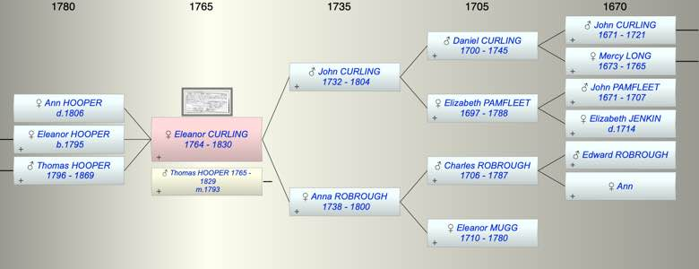

| [Index] |
| Eleanor CURLING (1764 - 1830) |
|  |

|
| b. abt 1764 |
| m. 25 Apr 1793 Thomas Abbott HOOPER (1765 - 1829) at St Saviour, Southwark |
| d. 1830 at Southwark aged 66 |
| Parents: |
| John CURLING (1732 - 1804) |
| Anna Maria ROBROUGH (1738 - 1800) |
| Children (3): |
| Ann Maria HOOPER ( - 1806) |
| Eleanor HOOPER (1795 - ) |
| Thomas HOOPER (1796 - 1869) |
| Events in Eleanor CURLING (1764 - 1830)'s life | |||||
| Date | Age | Event | Place | Notes | Src |
| abt 1764 | Eleanor CURLING was born | ||||
| 25 Apr 1793 | 29 | Married Thomas Abbott HOOPER (aged 28) | St Saviour, Southwark | Note 1 | |
| 1795 | 31 | Birth of daughter Eleanor HOOPER | Southwark | Note 2 | |
| 1796 | 32 | Birth of son Thomas HOOPER | Southwark | ex 1851 census | |
| 1800 | 36 | Death of mother Anna Maria ROBROUGH (aged 62) | Note 3 | ||
| 1804 | 40 | Death of father John CURLING (aged 72) | St Laurence | Note 4 | |
| 14 Aug 1806 | 42 | Death of daughter Ann Maria HOOPER | Southwark | Note 5 | |
| 1829 | 65 | Death of husband Thomas Abbott HOOPER (aged 64) | Southwark | Note 6 | |
| 1830 | 66 | Eleanor CURLING died | Southwark | Note 7 | |
| Created on a Mac™ using iFamily for Mac™ on 8 Oct 2023 |